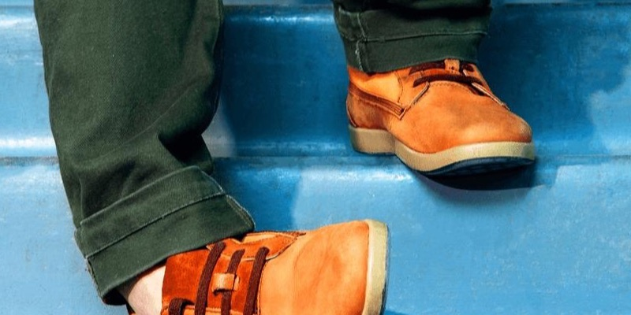

听见声音的另一种样子
由于我们依赖听力进行沟通以及与外界的大部分互动，未得到治疗的听力损失会让人们在许多场合感到压力或尴尬，从而导致回避这些场合，进而可能引发社交孤立、孤独感和抑郁。此外，这还会对工作和人际关系产生负面影响，因为无论是听力损失者本人还是周围的人，都可能因为在社交场合中进行沟通和参与所需的额外努力，比潜在的回报更为艰难。

未得到治疗的听力损失与跌倒风险增加有关，这可能带来严重后果，尤其是在我们年纪渐长时。一项2012年的研究发现，轻度听力损失者跌倒的可能性几乎是常人的三倍，且随着听力损失程度的加重，风险也会随之增加。
我们的耳朵捕捉声音并将信号传送到大脑，由大脑进行解读或“理解”。保持耳朵与大脑之间的紧密联系有助于保持大脑的活跃状态。多项研究证实了听力损失与认知能力下降之间的关联，其中一项研究指出，与听力正常的人相比，患听力损失的老年人认知能力下降的速度快30%至40%。这可能归因于多种因素，例如因难以理解他人言语而导致的认知负荷增加，无法充分参与社交活动也可能导致大脑刺激减少和社会孤立。
耳鸣——即耳朵里出现嗡嗡声、嘶嘶声或咻咻声——不仅令人烦躁，往往还预示着听力受损，绝不能忽视——尤其是当这种症状持续存在、影响你的注意力或睡眠，或者随着时间的推移逐渐加重时。
“你总是含糊其辞！”“说话清楚点！”你或你的亲人是否经常这样说？人们似乎确实更常含糊其辞了。你能感觉到他们在对你说话，也能听到他们的声音，但话语并不总是清晰，也不像以前那样容易听懂了。
我经常听到未接受治疗的听力损失者提到，他们开始听不到日常的声音——比如门铃声、楼梯的脚步声，甚至是水壶的哨声。你也可能会发现，一些细微的声音，比如鸟儿的鸣叫或远处救护车的警笛声，也变得越来越难捕捉。这些变化可能表明，你的听觉灵敏度或识别某些声音的能力正在下降。
我经常听到未接受治疗的听力损失者提到，亲友们注意到你把电视或收音机的音量调得比以前大了。你可能觉得音量刚刚好，但别人可能会觉得声音大得让人不舒服。
参加社交聚会或处于群体环境后，你是否感到异常疲惫？这种“社交疲劳”通常源于仔细聆听并理解对话所需的额外精力，尤其是在嘈杂的环境中。当听力不再敏锐时，大脑需要更加努力地填补信息空白，这会让人精神上感到疲惫。
人们反映，群体交谈有时会变得颇具挑战性，尤其是在同时进行多段对话或存在其他背景噪音的情况下。您可能会发现自己漏听了部分对话内容，或者比以往更频繁地需要请他人重复。
想检查一下自己的听力？
花几分钟做一次线上听力测试，初步了解自己的听觉状况。